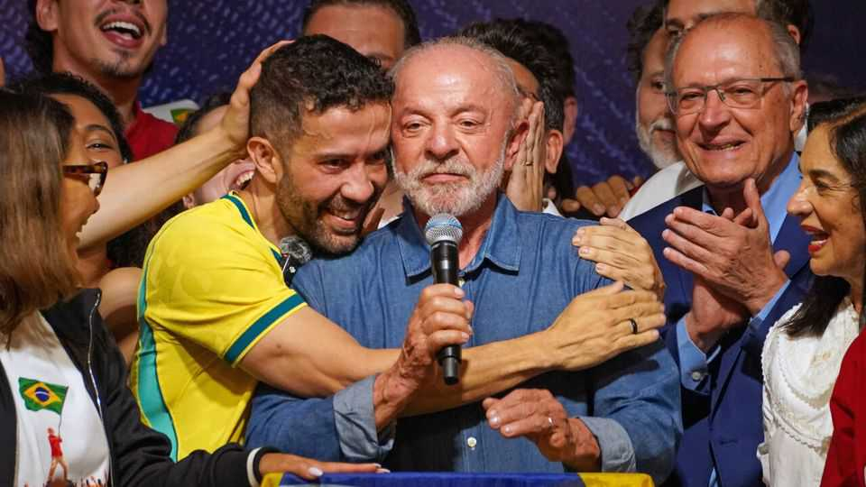

André “Mad Dog” Janones is a hero of the Brazilian left
Can politicians elsewhere in the world replicate his online campaigns?

Nov 5th 2026
The night he was re-elected as Brazil’s president, snatching victory from what seemed like sure defeat, Luiz Inácio Lula da Silva spoke to supporters in the streets of São Paulo. Lula, as the left-wing leader is known, gestured to a guest by his side. “I want to thank this comrade here, our general, who played a pivotal role in this campaign,” he told the crowds.
The man feted on October 25th was André Janones, a 42-year-old congressman for a small environmentalist party who some think was the architect of Lula’s surprise victory. He is the brains behind “Lula’s Army”—a channel on WhatsApp that acquired more than 10m followers in the three weeks before the run-off vote. Its success has made Mr Janones a cult hero on the Brazilian left. It has also caught the eye of leftist leaders around the world—including Pedro Sánchez, Spain’s prime minister, and Claudia Sheinbaum, Mexico’s president—who wonder if they can emulate his strategy in their own countries. “It’s replicable and I think it’s necessary,” Mr Janones tells The Economist. “In all honesty, I think this could be what sweeps the far right off the map.”
After Lula performed poorly in the first round of voting on October 4th, Mr Janones—a former lawyer whom colleagues dubbed “Mad Dog” for his scalding of right-wing candidates in advance of the elections in 2022—promised despairing left-wingers that if they followed his orders they could turn things around. At his request, Brazilians banged pots and pans when Lula’s rival, Flávio Bolsonaro, was interviewed on television. They flooded Instagram with images of themselves wearing Brazil’s national colours and making an “L” shape (a pro-Lula symbol) with their fingers. Mr Janones held late night livestreams on which he refused to speak until at least a million viewers had tuned in. “EVERYONE, URGENT! GET TAPPING, AND MAKE THIS VIDEO EXPLODE!” was a typical command.
Behind all this, says Mr Janones, lay a studied plan to game the algorithms that drive social networks. He ordered his followers to comment on and “like” pro-Lula posts before sharing them, to boost their engagement. He told his “army” not to respond to misinformation about their candidate, on the basis that any engagement could widen a post’s reach. Actions of the army were carefully co-ordinated. “When four million people posted the exact same photo at the exact same time, the algorithm interpreted it like a plane crash or a terrorist attack like 9/11 and blocked the reach of any other posts. That’s how we glitched the algorithm,” he says.
Lula’s Army was far from the only thing that helped swing the election. Having for weeks run an old-fashioned campaign, Lula himself began posting selfie-style videos online. In the weeks before the run-off, his government pushed through an amendment guaranteeing workers two days off a week, and forgave sole traders their federal tax debts. But Mr Janones’s channel “was a turnout machine”, says David Nemer at the University of Virginia, bringing out pro-Lula voters who had abstained in the first round. “It gave a campaign that had just proved it couldn’t talk to the internet a voice that could.”
WhatsApp groups inspired by Mr Janones’s effort are popping up around the world. Guides detailing his techniques are circulating online in French and Japanese. He has been invited to advise politicians in Colombia, Venezuela and the EU, among other places. The week after Brazil’s election he turned up in Argentina, where he met members of the Peronist opposition. And Mr Janones says he plans to continue mobilising Lula’s Army at home in order to press a conservative-dominated Congress to pass Lula’s bills.
The lawmaker has some reservations about his digital playbook. He says he felt uncomfortable encouraging people to ignore pro-Bolsonaro posts, rather than push back against them. But like many in the Brazilian left, he believes social media have long handed their opponents an advantage—and that the ends justify the means. “My strategy is a strategy of war.” ■